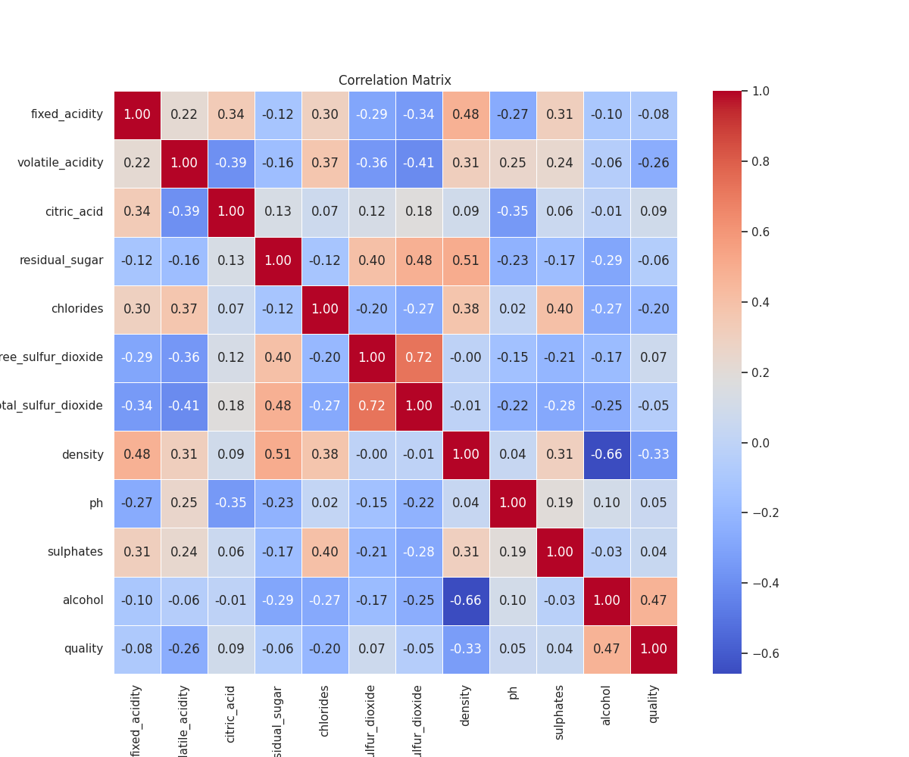
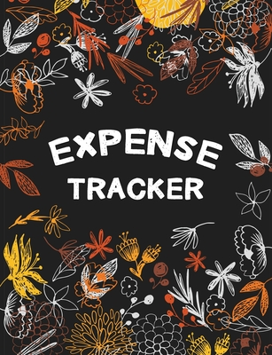

Projects

End to end data pipeline built with GNU make to analyse wine quality score. Built a classification model to predict the quality of wine based on physical properties of wine and validated the model with accuracy, F1 scores etc. Containrized with docker for reproducibility. Added unit tests and data validation to the pipeline for reliability.

Analyzed 10,000+ records of Vancouver open data to reveal trends of business emergence taking global crises such as the pandemic, dot-com crash etc. into account and predicted which businesses are likely to arise in the next 10 years. Presented the insights to the judged placing 2nd among 14 teams.
Built an inferential logistic regression model in R taking behavioral variables into consideration. Conducted statistical analysis methods including exploratory data analysis, variable selection with AIC scores and validated the model with ROC, precision/recall metrics.

Built a java app where a user can enter details of their daily expenses such as the amount, category, date. The app would give a warning if the daily limit is exceeded. The buttons on the app would allow user to view monthly/daily summary of expenses, calculate total/average. Json file persistence was used to save expense data and the user interface was designed with Java swing.
I am Currently,
- Deepening my understanding of statistics, machine learning, and data science through coursework and hands-on projects
- Learning more about data engineering, AI systems, and how large-scale data pipelines work behind the scenes
- Exploring new technologies and finding ways to use AI tools to improve productivity, creativity, and workflow efficiency
- Building projects that combine technical problem-solving with thoughtful visual design
- Improving my frontend development skills while designing and building this portfolio
- Experimenting with photography, digital art, and storytelling outside of tech
Art & Photography